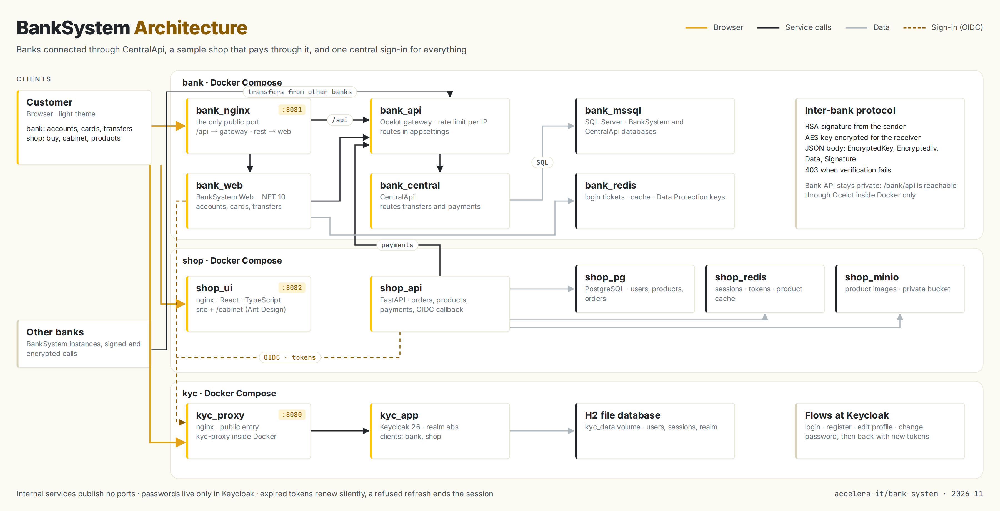

A web bank that connects to other banks through a central hub, a sample shop that takes card and direct payments through it, and one central sign-in for both. Each part is an independent Docker Compose stack.
The whole system on one page.

Banks stay independent; the hub and the sign-in are shared.
| Property | How it is ensured |
|---|---|
| One account everywhere | Keycloak holds every password. The bank and the shop have no login or register pages and create their local user on first sign-in, by email. |
| Banks stay independent | Each bank has its own database, RSA key and identity. CentralApi only routes between them, by name, swift code and country. |
| Bank traffic is unreadable and signed | Every call is hybrid encrypted with AES and an RSA-wrapped key, and signed by the sender. Verification failures answer 403. |
| Sessions follow Keycloak | Each app keeps the refresh token. Expired tokens are renewed; a refused refresh ends the session at once. |
| A credential change signs out | A saved profile or password ends the app session and the Keycloak session, so the user signs in again. |
| Small public surface | Only nginx in each stack publishes a port. Databases, Redis, MinIO, the gateway and the apps are internal. |
| Public API calls are limited | The gateway allows each client IP 60 calls a minute. Internal calls have no client address and are not limited. |
| Keycloak being away signs nobody out | A network failure during refresh leaves the session alone, and the next request tries again. |
Who uses the system and what it depends on.
| Actor | Reaches | Through |
|---|---|---|
| Customer | Bank pages, shop site and cabinet | bank_nginx :8081, shop_ui :8082 |
| Customer signing in | Login, register, profile and password forms | kyc_proxy :8080 |
| Bank staff | All accounts, transfer lookup | Administration area of the bank |
| Merchant (shop) | Direct and card payments | bank_api, the Ocelot gateway |
| Other banks | Global transfers and card payments | CentralApi, signed and encrypted |
| Keycloak root user | Realm administration | kyc_proxy :8080/admin |
Three stacks, each with its own Compose file and env file.
| Stack | Service | Technology | Role |
|---|---|---|---|
| bank | bank_nginx | nginx | Public entry: /api/ to the gateway, the rest to the bank |
| bank | bank_web | ASP.NET Core 10 | Accounts, cards, transfers, payments, administration |
| bank | bank_api | Ocelot, ASP.NET rate limiter | Gateway for every API call |
| bank | bank_central | ASP.NET Core 10 | CentralApi: routes transfers and payments between banks |
| bank | bank_mssql | SQL Server 2022 | BankSystem and CentralApi databases |
| bank | bank_redis | Redis | Login tickets, cache, Data Protection keys |
| shop | shop_ui | nginx, React, TypeScript | Shop site and cabinet, proxies /api/ |
| shop | shop_api | FastAPI, SQLAlchemy | Products, orders, payments, OIDC callback |
| shop | shop_pg | PostgreSQL | Users, products, orders |
| shop | shop_redis | Redis | Sessions, tokens, product cache |
| shop | shop_minio | MinIO | Product images in a private bucket |
| kyc | kyc_proxy | nginx | Public entry to Keycloak |
| kyc | kyc_app | Keycloak 26, H2 | Sign-in, realm abs, clients bank and shop |
Each stack joins the networks of those before it.
| Order | Stack | Public port | Creates | Joins |
|---|---|---|---|---|
| 1 | kyc | 8080 | kyc_lan | — |
| 2 | bank | 8081 | bank_lan | kyc_lan |
| 3 | shop | 8082 | shop_lan | bank_lan, kyc_lan |
Inside the containers the apps listen on 5000 and Keycloak on 8080. MinIO and Keycloak refuse _ in a host name, so they are reached through the shop-minio and kyc-proxy network aliases.
OpenID Connect authorization code flow, with PKCE in both apps.
/account/login) or the shop (/api/auth/login) sends the browser to Keycloak. Register adds prompt=create./signin-oidc or /api/auth/callback, and the app exchanges it through kyc-proxy.Browsers use localhost:8080 and the apps use kyc-proxy:5000. Keycloak's dynamic backchannel keeps the issuer the same for both.
What happens after sign-in.
| Event | Behaviour |
|---|---|
| Access token expires | The next request renews the tokens with the refresh token, with no sign to the user. |
| Keycloak refuses the refresh | The session is deleted and the user is sent to the login page. This covers logout elsewhere and blocked users. |
| Keycloak is unreachable | The session stays and the next request tries again. |
| Logout | The session ends and the browser goes to Keycloak's logout, which ends the shared sign-in too. |
| Second app in the same browser | Keycloak's session signs the user in with no form. |
The bank does this in KycTokenRefresher, on cookie validation. The shop does it in current_user, on every request.
Forms run at Keycloak, in a popup.
kc_action: UPDATE_PROFILE or ABS_UPDATE_PASSWORD.abs theme adds the field and a Keycloak provider checks it on the server.kc_action_status=success: the app session and the Keycloak session end, and the app behind goes to login.Every call between a bank and CentralApi.
| Step | Detail |
|---|---|
| Sender signs | With its own RSA private key |
| Sender encrypts | The payload with a new AES key and IV, and those with the receiver's RSA public key |
| Message | Base64 JSON: EncryptedKey, EncryptedIv, Data, Signature |
| Receiver verifies | The [DecryptAndVerifyRequest] filter decrypts, verifies and replaces the action's first argument with the JSON |
| Failure | 403, and the action never runs |
Keys use the .NET <RSAKeyValue> XML format; docs/rsa-keygen.sh generates them.
What Ocelot and nginx send where.
| Public path | Internal path | Target |
|---|---|---|
:8081/* | same | bank_web |
:8081/api/pay | /pay | bank_central, with X-Forwarded-Prefix: /api |
:8081/api/pay/continue | /pay/continue | bank_central, with the same prefix |
:8081/api/swagger/* | /swagger/* | bank_central, Development only |
:8081/api/* | /api/* | bank_central |
Internal only: bank_api:5000/bank/api/* | /api/* | bank_web; nginx does not publish it |
/pay exists in the bank and in CentralApi, so CentralApi's page is public as /api/pay.
The two ways a shop gets paid.
| Step | Direct payment | Card payment |
|---|---|---|
| 1 | The shop signs a request and the browser posts it to /api/pay | The cabinet sends the card to shop_api |
| 2 | CentralApi lists the banks and the customer picks one | shop_api calls CentralApi through the gateway |
| 3 | The bank's /pay page confirms, signed in through Keycloak | CentralApi finds the bank by the card's first 3 digits |
| 4 | The transfer goes bank → gateway → CentralApi → gateway → bank | The bank checks the card and moves the money |
| 5 | The bank posts a signed result to the shop, which marks the order paid | The shop marks the order paid |
The receiving bank checks that the recipient's name equals the account owner's Full Name, so RECIPIENT_NAME in shop.env must match the shop's bank user.
Uploaded in the cabinet, served by the API.
| Rule | Detail |
|---|---|
| Storage | A private MinIO bucket, products; only shop_api reaches it |
| Upload | Signed-in users, 5 MB at most, through POST /api/products/images |
| Type | PNG, JPEG or WebP, taken from the bytes and not from the file name |
| Serving | GET /api/products/images/{key}, cached for a year, with nosniff |
| Deleting a product | Refused while it has orders. Its image stays in the bucket |
Where each piece of data lives.
| Store | Holds | Volume |
|---|---|---|
| SQL Server | Users, accounts, cards, transfers, known banks | bank_mssql_data |
| Redis (bank) | Login tickets with tokens, cache, Data Protection keys | bank_redis_data |
| PostgreSQL | Shop users, products, orders | shop_pg_data |
| Redis (shop) | Sessions, tokens, login state, product cache | shop_redis_data |
| MinIO | Product images | shop_minio_data |
| H2 | Keycloak users, credentials, sessions, realm | kyc_kyc_data |
The bank and CentralApi migrate with EF Core on startup. The shop creates its tables in seed.py. The abs realm is imported on first start only.
Controls, and what is deliberately left for a real deployment.
| Area | Control |
|---|---|
| Passwords | Only in Keycloak; the bank and the shop store none |
| Change password | The current password is checked on the server by a provider, not only in the form |
| OIDC | State, nonce and PKCE; the client secret stays on the server |
| Redirects | next and returnUrl stay on the site; Keycloak allows only registered URIs |
| Sessions | HttpOnly cookies that point to Redis, with no tokens in the browser |
| Rate limit | 60 calls a minute per IP on public /api/, answered with 429 |
| Uploads | Type from the bytes, private bucket, nosniff |
What runs, and on what.
| Suite | Technology | Runs on |
|---|---|---|
| Bank and CentralApi (4 projects) | xUnit, FluentAssertions, Moq | EF Core InMemory, WebApplicationFactory |
| Shop API | pytest | SQLite, fake Redis, fake storage |
| Shop UI | Playwright, TypeScript | The whole stack, real Keycloak, CentralApi stub |
| Keycloak | JUnit, Java | Real Keycloak on H2: login, register, tokens, sessions |
SQL Server itself is not covered by the test suites: it is checked by running the real stack.
Running it.
docker compose -f kyc/docker-compose.yml up -d --build docker compose -f bank/docker-compose.yml up -d --build docker compose -f shop/docker-compose.yml up -d --build cd bank && dotnet test docker compose -f shop/docker-compose.test.yml run --rm --build shop_api_tests docker compose -f shop/docker-compose.test.yml up --build --abort-on-container-failure --exit-code-from shop_ui_tests shop_ui_tests docker compose -f kyc/docker-compose.test.yml up --build --abort-on-container-failure --exit-code-from kyc_tests kyc_tests
| Account | Password | Use |
|---|---|---|
demo@abs.uz | 123456 | Default user: bank administrator with 10,000,000 UZS |
admin | 123456 | Keycloak root user |
What a real deployment still needs.
| Risk | Now | Next |
|---|---|---|
| Secrets in a public repository | Env files with development values are committed | Rotate every value and move them to a secret store |
| Email is not verified | Users are matched by email, so anyone can claim an unused address | Turn on Keycloak's verifyEmail, with SMTP |
| H2 for Keycloak | Single instance, development use only | Move to a production database |
| Plain HTTP | Everything runs on localhost | Terminate TLS at nginx and require it in Keycloak |
| SQL Server on Apple Silicon | Runs under amd64 emulation | Run it natively on the servers |
| Recipient name check | Renaming the shop's bank user breaks payments | Match accounts by id, not by name |
| Orphaned images | A deleted product leaves its image | Delete the object with the product |